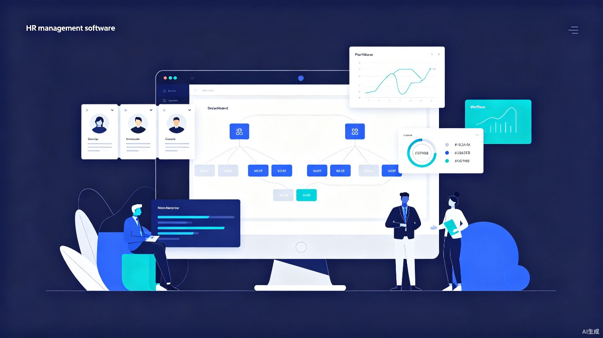

人事部门
综合管理平台
覆盖员工全生命周期的数字化人事管理解决方案。从招聘入职到退休离职，八大业务模块一体化协同，让流程更透明、审批更高效、数据更集中。

产品介绍
面向企业人事部门的一体化数字管理平台，将分散的人事业务整合到统一系统中，实现全流程数字化管理。
全生命周期管理
覆盖员工从招聘入职、在职管理到离职退休的完整职业生命周期，每个阶段都有对应的数字化流程支撑。
员工自助服务
员工可通过自助端查看个人信息、提交请假加班申请、查询考勤记录、参与绩效自评，减少 HR 事务性工作负担。
智能数据驱动
自动采集考勤、绩效等业务数据，生成多维度统计报表，为人才决策提供数据支撑，告别凭经验拍脑袋。
核心功能
八大业务模块覆盖人事部门全部核心工作场景，模块间数据互通、流程联动。
人员招聘
需求申请、渠道管理、简历筛选、面试安排、录用审批全流程数字化。
人事管理
员工档案、组织架构、岗位编制、人员异动、合同管理一站式维护。
职位晋升
晋升计划发布、申报推荐、资格审查、评审投票、公示任命规范化流程。
干部评审
360度评价、民主测评、个别谈话、评审报告，为干部任用提供决策依据。
绩效考核
目标设定、过程跟踪、多维评分、强制分布、结果申诉全周期管理。
出勤假期
考勤规则配置、打卡记录、假期额度管理、加班调休、月度统计报表。
离职手续
离职审批、面谈记录、工作交接、资产回收、权限注销、结算证明。
退休退养
退休预警、办理流程、内部退养、返聘管理、退休人员关怀服务。
页面原型演示
以下为核心页面的高保真交互原型，展示关键界面的信息架构和操作流程。
近期审批动态
| 事项 | 发起人 | 状态 | 时间 |
|---|---|---|---|
| 张三 — 请假申请（3天） | 张三 | 待审批 | 今天 09:30 |
| 李四 — 录用审批 | HR 王芳 | 已通过 | 今天 08:15 |
| 赵六 — 调岗申请 | 赵六 | 审批中 | 昨天 16:40 |
| 孙七 — 加班申请 | 孙七 | 已通过 | 昨天 14:20 |
| 周八 — 离职申请 | 周八 | 已驳回 | 前天 11:00 |
我的待办
候选人列表 — 高级前端工程师
申请信息
审批进度
技术逻辑
平台采用分层架构设计，通过工作流引擎驱动业务流程，以 RBAC 权限模型保障数据安全。
flowchart TB
subgraph Access["用户接入层"]
direction LR
W["Web 管理端"]
M["移动端 H5"]
A["开放 API"]
end
subgraph Modules["应用服务层"]
direction LR
R["招聘"]
P["人事"]
PR["晋升"]
C["评审"]
PE["绩效"]
AT["考勤"]
RE["离职"]
RT["退休"]
end
subgraph Engine["业务引擎层"]
direction LR
WF["工作流引擎"]
AP["审批引擎"]
AU["权限引擎"]
FM["表单引擎"]
NT["消息通知"]
end
subgraph Data["数据持久层"]
direction LR
DB["主数据库"]
FS["文件存储"]
CA["缓存服务"]
LG["审计日志"]
end
Access --> Modules
Modules --> Engine
Engine --> Data
工作流驱动机制
所有需要流转的业务均通过工作流引擎驱动。引擎在运行时根据流程定义自动确定处理人、判断流转条件、执行超时策略，并将每一步操作记录到审计日志中。
sequenceDiagram participant U as 发起人 participant WF as 工作流引擎 participant A1 as 审批人1 participant A2 as 审批人2 participant SYS as 系统 U->>WF: 提交业务申请 WF->>WF: 加载流程定义 WF->>A1: 分配审批任务（通知） A1->>WF: 审批通过 + 意见 WF->>WF: 判断流转条件 WF->>A2: 分配审批任务（通知） A2->>WF: 审批通过 + 意见 WF->>SYS: 触发业务动作（更新状态） WF->>U: 通知审批结果
工作流引擎
支持串行审批、并行会签、条件分支、委托加签四种模式。流程定义可视化配置，运行时自动匹配处理人、判断分支条件、执行超时策略。
权限引擎（RBAC）
基于角色的访问控制，从功能权限、数据权限、字段权限、审批权限四个维度精细管理。权限变更需审批，所有变更记录纳入审计日志。
表单引擎
可视化表单设计器，支持拖拽式字段布局、条件显示、数据校验规则配置。同一表单模板可被多个业务流程复用，减少重复开发。
消息通知
统一消息中心，支持站内信、邮件、企业微信/钉钉推送。流程启动、节点到达、审批完成、超时催办等事件自动触发通知。
数据可视化
平台自动采集各业务模块数据，生成多维度统计报表，为管理决策提供直观的数据支撑。
建设路线
建议分三期推进平台建设，优先夯实数据基础，再逐步扩展业务覆盖面。
第一期：基础平台
第 1-3 个月搭建平台基础框架，完成人事管理模块（员工档案、组织架构、岗位编制）和工作流引擎、权限引擎、表单引擎等公共能力建设。实现人员主数据的集中管理和基础审批流程的线上化。
第二期：业务扩展
第 4-6 个月上线人员招聘、出勤假期、绩效考核三大高频业务模块。实现招聘全流程管理、考勤自动采集与假期额度管理、绩效考核方案配置与评分汇总。打通模块间数据联动（考勤数据自动纳入考核参考）。
第三期：深度应用
第 7-9 个月上线职位晋升、干部评审、离职手续、退休退养四大模块。完善数据分析与报表能力，建设管理驾驶舱。对接外部系统（OA、财务、社保），实现数据互通。根据使用反馈持续优化用户体验。